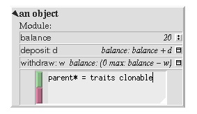
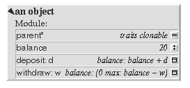
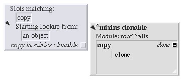
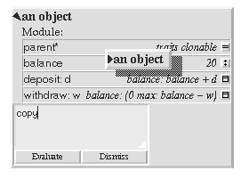

Adding a copy method to the bank accountDuring:After:Finding the inherited methodCopying the bank account |
Adding a copy method to the bank accountLet's make a copy of our bank account object. To do this, we need to add a method which will make a copy. We could write this from scratch, but a better way is to inherit an existing method.Copying is a fundamental part of a prototype-based system and it happens a lot. To make it easy to do, in Self we have a traits object which provides basic copying functionality (more on traits objects later). It is called traits clonable, and if we inherit from it, we get a method, copy, which will make a simple copy (or clone) of the receiver. So, let's add traits clonable as a parent of our bank account, by adding a slot like this:
parent* = traits clonableWe start by using the middle-button menu on the bank account's title bar to add a slot. We'll call the slot parent*; the name is not important, but the asterisk suffix is, as this designates it as a parent slot. We'll make it a constant slot (the equals sign denotes this), and make it refer to traits clonable. Clicking the green accept button adds the slot; clicking the red cancel button would cancel the operation and dismiss the slot editor. We can summon traits clonable by clicking on the parent slot's button.
Finding inherited methodsWe can find the definition of the copy method by browsing traits clonable, and if necessary its ancestors. In general, however, we will not know where the definition of an inherited method is to be found. To accelerate the search we can use the `Find slot...' middle-button menu item from an object's title bar.When we invoke this, an enumerator appears. We enter the name of the slot we are searching for - in this case, copy - and accept it, and then initiate the search by clicking on the expander. The search takes place concurrently with other activities. When the search is complete, a list of candidates will appear (all inherited definitions of the slot), each with a button to summon the object containing the slot. In this case, there is only one, so that object is summoned automatically. The copy method sends a single message to self, namely clone. We can re-use the enumerator to find this too (double-clicking on the selector lets us edit it). We find a long method that invokes the primitive cloning operation, _CloneIfFail. We can tell that it is a primitive, because the name begins with an underscore. We will return to primitives later.
Invoking copyMeanwhile, we can now copy our bank account, by evaluating the expression copy in its evaluator.
|